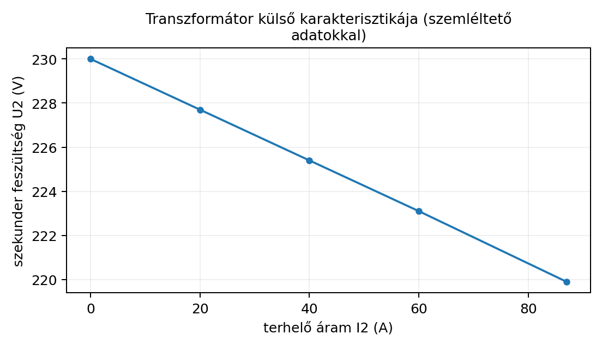
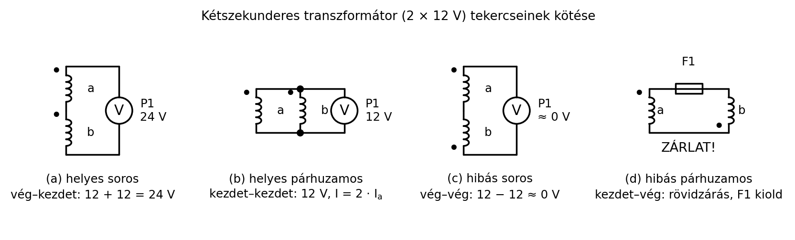

Gondolj arra a helyzetre, amikor egy műhelyben a hegesztőgép vagy egy nagyobb motor indítása miatt a világítás érezhetően elhalványul, majd visszaáll. A jelenséget a betápláló transzformátor terhelési feszültségesése okozza: minél nagyobb áramot veszünk ki a transzformátorból, annál jobban csökken a szekunder oldali feszültség. Ugyanakkor a transzformátor nem ideális, működés közben melegszik, és a felvett teljesítmény egy része veszteségként hővé alakul. A szerelőnek ahhoz, hogy megfelelő transzformátort válasszon, felülvizsgáljon vagy párhuzamosan működtessen, ismernie kell a terhelési viselkedést, a hatásfokot és a veszteségeket. Ezt az alfejezetet azért tanulod meg, hogy a munkahelyen ne csak „be van kötve”, hanem üzembiztos és gazdaságos legyen a berendezés.
Egy elosztóhálózati transzformátor adattáblája szerint a névleges látszólagos teljesítménye 630 kVA, a feszültségáttétele 20/0,4 kV. Üresjárásban a szekunder kapcsokon 400 V-ot mérünk. Ha a telephely fogyasztói fokozatosan bekapcsolnak, a szekunder feszültség – a transzformátor belső impedanciáján eső feszültség miatt – csökkenni fog, a tekercsek pedig melegszenek. Ha túl nagy a terhelés, a szigetelés károsodhat. Gazdaságossági szempontból pedig nem mindegy, hogy a berendezés a nap hány százalékában üzemel jó hatásfokkal.
Az alábbi ábra egy tipikus külső karakterisztikát mutat: a szekunder oldali feszültséget a terhelő áram függvényében.

Az ábráról leolvasható, hogy a feszültség a terheléssel közel egyenletesen csökken: a közelítő képlet szerint a feszültségváltozás arányos a terhelő árammal, ezért a pontok egyenesre esnek (névleges, 87 A-es terhelésnél kb. 10 V, azaz 4,4 %). A valóságban a görbe enyhén ívelt lehet, és függ a terhelés jellegétől (induktív, kapacitív).
Definíció. A transzformátor külső karakterisztikája a szekunder oldali feszültség és a terhelő áram közötti összefüggés, állandó primer feszültség és állandó mellett:
Az üresjárási szekunder feszültség és a terheléses feszültség különbsége a feszültségváltozás:
Százalékos alakban:
A feszültségváltozást a transzformátor belső, szekunder oldalra redukált eredő impedanciája okozza, amelyet a primer és szekunder tekercs ellenállásának, szórási reaktanciájának összegeként képzelhetünk el:
ahol a teljes, szekunder oldalra redukált ellenállás, pedig a teljes szórási reaktancia. A szekunder oldali kapcsoláson a impedancián a terhelő áram feszültségesést hoz létre. A feszültségváltozás közelítő képlete – az induktív terhelésű transzformátorok szokásos tartományában – a következő:
A képletből látszik, hogy a feszültségváltozás a terhelő árammal arányos, és függ a terhelés teljesítménytényezőjétől. Jellegzetes esetek:
Számítás. Egy 25 kVA-es, 400/230 V-os egyfázisú transzformátor szekunder oldalra redukált belső impedanciája (, ). Mekkora a százalékos feszültségváltozás teljes terhelésen, ha induktív?
Névleges szekunder áram:
.
Százalékban:
Ellenőrzés: A kapott feszültségváltozás belefér a tipikus elosztótranszformátorok néhány százalékos értékébe. Az áramerősség reális, hiszen 25 kVA teljesítményhez körülbelül 100 A tartozik 230 V-on.
Fázorábra és külső karakterisztika egy helyen. A közelítő képlet a fázorábrából érthető meg: a vízszintes fázorhoz hozzáadjuk az árammal párhuzamos és az áramra merőleges feszültségesést (ez a Kapp-háromszög), és az eredő az üresjárási feszültség. Induktív terhelésnél az késik, a háromszög „kifelé” fordul, így jóval hosszabb -nél; kapacitív terhelésnél a háromszög felfelé fordul, a hosszkülönbség kicsi, sőt negatív is lehet.
A statikus ábra a 25.1 alfejezet 100 VA-es transzformátorát mutatja (, , , ), mellett: teljes terhelésnél induktív esetben kb. 7,6 %, kapacitív esetben csak kb. 2,6 % a feszültségváltozás (a közelítő képlet itt 2,3 %-ot ad), a hatásfok legjobb értéke -nél van. A HTML-kiadásban a névleges teljesítmény, , , , a terhelés, a és a jelleg állítható; a kijelző a pontos (vektoros) és a közelítő feszültségváltozást is mutatja, így látszik, mikor elég a közelítő képlet. Próbáld ki: állítsd kapacitívra, és csökkentsd a -t – kb. 0,58 alatt nagyobb lesz -nál. Miért éppen ott?
A transzformátor a bemenő hatásos teljesítmény egy részét veszteségként hővé alakítja. A veszteségek két csoportra oszlanak:
A hatásfok a leadott és felvett hatásos teljesítmény viszonya:
A szekunder oldali hatásos teljesítmény:
Gyakran használjuk a terhelési tényezőt (), amely a tényleges terhelés és a névleges terhelés aránya:
Ezzel a tekercsveszteség:
A hatásfok tehát:
Törvény. A transzformátor hatásfokának maximuma ott van, ahol a vasveszteség és a tekercsveszteség egyenlő. Ezt könnyen beláthatjuk, ha a hatásfokot a terhelési tényező függvényében vizsgáljuk: a nevezőben a -val arányos teljesítmény és a -tel arányos veszteség összege a hatásfokot abban a pontban maximalizálja, ahol a derivált nulla. A deriválás elvégzése után a feltétel:
Ebből az optimális terhelési tényező:
Számítás. Egy 630 kVA-es transzformátor vasvesztesége 1,2 kW, a névleges tekercsvesztesége 6,5 kW. Mekkora az optimális terhelési tényező, és mekkora terhelésnél lesz a legjobb a hatásfok?
Az optimális látszólagos teljesítmény:
Ez azt jelenti, hogy ez a transzformátor nem teljes terhelésen, hanem körülbelül 43 %-os terhelésen üzemel a legjobb hatásfokkal. A gyakorlatban ezért egy folyamatosan kis terheléssel járó, de nagy névleges teljesítményű transzformátor rosszabb hatásfokkal dolgozhat, mint egy kisebb, jobban terhelt egység.
Napi hatásfok. A hálózati üzemű transzformátorok terhelése a nap folyamán változó, ezért pusztán a névleges hatásfok nem mindig jellemzi jól az energiahatékonyságot. A napi hatásfok a nap folyamán leadott összes hatásos energia és a felvett összes hatásos energia hányadosa:
Itt az egyes időszakokban () eltérő terhelések és veszteségek jelentkeznek. A napi hatásfok fontos mutató a közüzemi elosztótranszformátorok értékelésénél: az EU ökotervezési előírásai a transzformátorok üresjárási és terhelési veszteségének legnagyobb értékét (nagy egységeknél a csúcshatásfok-indexet) korlátozzák (ellenőrizendő: 548/2014/EU és 2019/1783/EU rendelet, MSZ EN 50588-1 / MSZ EN 50708 sorozat).
Ábra. Az alábbi grafikon a hatásfokot mutatja a terhelési tényező függvényében (, , ):
Az ábráról leolvasható, hogy a hatásfok kis terhelésnél (β = 0,05: 95,9 %) a vasveszteség miatt alacsonyabb, a részterhelések tartományában viszonylag lapos, majd a teljes terhelés felé enyhén csökken (β = 1: 98,7 %). A maximum a környékén van, ahogy számítottuk.
A transzformátor veszteségei hővé alakulnak. A hőmérséklet addig emelkedik, amíg a keletkező hő teljesítménye egyenlővé nem válik a környezetnek leadott hőteljesítménnyel. A melegedési folyamat időfüggvénye exponenciális jellegű:
ahol a tartósan elérhető hőmérséklet-emelkedés, pedig a hőidőállandó, amely a transzformátor tömegétől, felépítésétől és hűtésétől függ. Nagyobb transzformátorok esetén a hőidőállandó órák nagyságrendű is lehet, ezért rövid ideig túlterhelhetők anélkül, hogy a hőmérséklet veszélyesen megugrana. Hosszú távú túlterhelés viszont a szigetelést károsítja.
A hűtés módjai jellemzően: természetes léghűtés (száraz transzformátorok), olajhűtés (a tekercsek olajba merülnek, az olaj természetes vagy kényszerített keringetésű), és ventilátoros rásegítés. A hűtési módot a típustáblán szereplő betűk jelzik (pl. ONAN, KNAN; ellenőrizendő a gyártói jelölés). A névleges teljesítményt a gyártó a megengedett legnagyobb tartós hőmérséklet alapján adja meg, amelyet a szigetelési osztály határoz meg (például A, E, B, F, H osztályok). A gyakorlati szabály: a hőmérséklet tartós túllépése kb. 10 °C-kal a szigetelőanyag élettartamát felére csökkentheti (ellenőrizendő: szigeteléstechnikai szabály, gyártói adat).
A négy jellemző kivitelt a következő tabló hasonlítja össze. A száraz (öntött gyantás) transzformátor tekercsei között alulról felfelé áramlik a levegő (AN), nagyobb tartós terhelésnél a tekercsek alá szerelt, hőérzékelő által kapcsolt ventilátorok segítenek (AF). Az olajtranszformátorban a tekercsek melegítette olaj felszáll, a tartály bordáiban (ONAN) vagy a külön radiátorokban lehűl, majd alul visszaáramlik; ventilátoros radiátorral ONAF a jelölés. A hűtési kód négy betűjének jelentése az ábra alján olvasható.
A gyakorlatban ebből két ellenőrzési pont következik: a hűtőlevegő útját (a száraz transzformátor alatti és feletti szabad teret, a helyiség szellőzőnyílásait, a bordák és radiátorok tisztaságát) nem szabad elzárni, és a ventilátoros (AF, ONAF) adattábla-teljesítmény csak működő ventilátorokkal érvényes. A HTML-kiadásban a négy hűtési mód külön nagyítható, a részek rámutatásra magyarázatot kapnak.
A transzformátor teljesítményét látszólagos teljesítményben (kVA) adják meg, nem wattban. Ennek oka, hogy a melegedést a tekercsekben folyó áram és a rákapcsolt feszültség okozza, függetlenül attól, hogy a terhelés hatásos vagy meddő teljesítményt vesz fel. Például egy 100 kVA-es transzformátor akkor is teljes árammal terhelt, ha a fogyasztó mellett csak 50 kW hatásos teljesítményt vesz fel: a meddő komponens ugyanúgy melegíti a tekercseket.
Sok kistranszformátornak két egyforma szekunder tekercse (például 2 × 12 V vagy 2 × 115 V) vagy megcsapolt primerje (0–230–400 V) van, és a szerelő dönti el a bekötéssel, milyen feszültséget és áramot kap. Ehhez a tekercskezdetet kell ismerni: a ponttal (•, pontjelölés) vagy a kapocsszámozással jelölt végek ugyanabban a pillanatban azonos polaritásúak (a fluxus ugyanabban az irányban indukálja bennük a feszültséget).
A primer oldalon ugyanez a szabály: a 2 × 115 V-os primert 230 V-os hálózathoz sorba, 115 V-hoz párhuzamosan kötjük, mindig a tekercskezdetek szerint. Az alábbi rajz a négy esetet mutatja egy 2 × 12 V-os szekunderen; a primer mindegyik esetben névleges feszültségen van.

Hasonlítsd össze a (a) és a (c) részt: a két rajz csak egyetlen kötésben tér el – melyikben, és miért mér a voltmérő az egyikben 24 V-ot, a másikban ≈ 0 V-ot? A (d) rész a legveszélyesebb tévedés: a voltmérő nem is kell hozzá, a biztosíték azonnal kiold.
Polaritásvizsgálat (gyakorlati lépéssor). Ha a tekercskezdet nincs jelölve, egy egyszerű méréssel megállapítható. A primer bekötését feszültségmentes állapotban végezd az öt szabály szerint: (1) kikapcsolás és leválasztás, (2) visszakapcsolás elleni biztosítás, (3) a feszültségmentesség ellenőrzése, (4) földelés és rövidrezárás, ahol előírt, (5) a szomszédos, feszültség alatt álló részek letakarása vagy elkerítése. A primerre csak a névleges feszültséget kapcsold; a szekunder oldalon törpefeszültségen dolgozol.
A gyakorlatban két vagy több transzformátort kapcsolnak párhuzamosan, ha a terhelés meghaladja egy egység teljesítményét, ha tartalékra van szükség, vagy ha a terhelést gazdaságosan kell elosztani. A párhuzamos üzemhez az alábbi alapfeltételeknek kell teljesülniük:
A párhuzamos üzem előnye, hogy a veszteségek csökkenthetők, ha a terhelés kicsi: ilyenkor egy transzformátort kikapcsolhatunk, és a másik közelebb kerül az optimális terhelési tényezőjéhez.
Egy kisebb üzem háromfázisú betápláló transzformátora 630 kVA-es volt. A nappali üzem során a csúcsterhelés alig érte el a 250 kVA-t, éjszaka pedig 10–20 kVA volt. A hálózati engedélyes (elosztó) a transzformátort a vasveszteség miatt is ellenőrizte. Az elemzés kimutatta, hogy a 630 kVA-es transzformátor vasvesztesége viszonylag nagy a kis átlagos terheléshez képest, így a napi hatásfok rossz volt. A megoldás az lett, hogy a cserét követően egy kisebb, 315 kVA-es transzformátort telepítettek, amelynek kisebb vasvesztesége volt; a napi hatásfok javult. A kisebb transzformátor ohmos belső impedanciája azonos mellett nagyobb (), ezért a feszültségesést újra ellenőrizni kellett, és a megcsapolást szükség szerint át kellett állítani (ellenőrizendő: a tényleges terhelési profil és az ismeretében). Ez a példa mutatja, hogy a transzformátor kiválasztása nem pusztán a névleges teljesítmény megadásából áll: a veszteségi viszonyok és a terhelési profil meghatározzák az üzemköltséget és a feszültségminőséget.
Rendelés vagy csere előtt menj végig a sorokon; a harmadik oszlop megmutatja, hol tanultad a szempontot.
| Kistranszformátor (vezérlő, biztonsági): mit ellenőrizz? | Hol tanultad? |
|---|---|
| 1. és a használandó primer kapocspár (0–230 / 0–400) | 25.1 |
| 2. és a szükséges VA (), valamint a behúzási teljesítmény a gyártói diagram szerint | 25.1 |
| 3. Fajta: biztonsági (SELV/PELV, legfeljebb 50 V AC), leválasztó vagy vezérlőtranszformátor (ellenőrizendő: MSZ EN 61558-2 sorozat) | 25.4 |
| 4. Rövidzárás-biztossági kivitel és a szekunder védelem | 25.4 |
| 5. Primer védelem a bekapcsolási áramlökéshez (pl. C vagy K jelleggörbe; ellenőrizendő: gyártói adat) | 25.1, 25.4 |
| 6. Környezeti hőmérséklet, beépítési helyzet, szellőzés (ellenőrizendő: adattábla) | 25.2 |
| 7. A szekunder feszültség teljes terhelésen (, ) elég-e a fogyasztónak | 25.2 |
| Elosztótranszformátor: mit ellenőrizz? | Hol tanultad? |
|---|---|
| 1. a csúcsterhelés és a várható növekedés alapján | 25.2, méretezés |
| 2. : kisebb érték jobb feszültségtartás, de nagyobb zárlati áram | 25.1, 25.2 |
| 3. Kapcsolási csoport (pl. Dyn5, Yzn), csillagpont-terhelhetőség | 25.3 |
| 4. Vas- és tekercsveszteség, napi hatásfok, ökotervezési követelmény (ellenőrizendő: hatályos EU-rendelet) | 25.2 |
| 5. Hűtési mód és a helyiség (szellőzés, olajfelfogás, tűzvédelem; ellenőrizendő: MSZ EN 60076 sorozat, helyi előírás) | 25.2, 25.4 |
| 6. Párhuzamos üzem: azonos feszültség, áttétel, kapcsolási csoport, közeli | 25.2, 25.3 |
A transzformátort wattban méretezik, és nem veszi figyelembe a meddő teljesítményt. Egy esztergapad motorja -tel akár 100 kVA látszólagos teljesítményt is felvehet, miközben a hatásos teljesítménye csak 50 kW. Ha a transzformátort 60 kW-osnak választják, túlterhelődik. Helyes: kVA-ban kell számolni, és a meddőteljesítményt is figyelembe kell venni.
A feszültségváltozást elhanyagolják, és nem ellenőrzik a szekunder feszültséget teljes terhelésen. Ennek következménye lehet, hogy a távoli fogyasztóknál a feszültség a megengedett tűrésnél alacsonyabb lesz. Helyes: kiszámolni a feszültségváltozást, és szükség esetén fokozati kapcsolót (transzformátor megcsapolásait) alkalmazni.
A párhuzamos üzemnél figyelmen kívül hagyják a rövidzárási feszültség különbségét. Ha két, eltérő -val rendelkező transzformátort kapcsolnak párhuzamosan, az egyik túlterhelődhet, a másik pedig alulterhelt marad. Helyes: a gyártó által megadott feltételeket ellenőrizni, és csak azonos (vagy közeli) -val rendelkező egységeket párhuzamosítani.
Gyakorlás: ennek az alfejezetnek a kidolgozott példái, gyakorlatai és megoldással ellátott feladatai az Összefoglaló feladatgyűjtemény villanyszerelő tanulóknak című kötet 25.2 szakaszában találhatók.
A terhelt transzformátor szekunder feszültsége a belső impedancián eső feszültség miatt csökken. A feszültségváltozás , ahol és a szekunder oldalra redukált eredő ellenállás és reaktancia. A külső karakterisztika az görbe. A veszteségek két fő részből állnak: a terheléstől független vasveszteségből és a terhelő áram négyzetével arányos tekercsveszteségből. A hatásfok , és akkor maximális, ha a vasveszteség egyenlő a tekercsveszteséggel. Az optimális terhelési tényező . A napi hatásfok a változó terhelési profil melletti energiaátalakítás hatékonyságát jellemzi. A transzformátor névleges teljesítményét kVA-ban adják meg, mert a melegedést az áram és a feszültség szabja meg, nem a hatásos teljesítmény. A párhuzamos üzem alapfeltételei: azonos feszültség, frekvencia, kapcsolási csoport és közel azonos rövidzárási feszültség. Ezeket az eredményeket használjuk a Háromfázisú transzformátor és kapcsolási csoportok alfejezetben, valamint a Transzformátor- és gépmérések alfejezetben.
A leírt fizikai összefüggések és a matematikai levezetések a klasszikus elektrotechnikai alapokból származnak, és nem igényelnek külön forrásellenőrzést. A szigetelési osztályokra, a hűtési módok jelölésére és a transzformátorokra vonatkozó konkrét szabványokra (pl. MSZ EN 60076 sorozat) és az EU környezettudatos tervezési előírásokra vonatkozó állítások aktuális változata ellenőrizendő. A párhuzamos üzemre vonatkozóan a gyártói adatlapok és a hálózati engedélyes követelményei az irányadók; a fenti arányossági szabály közelítő, nem tervezési előírás.